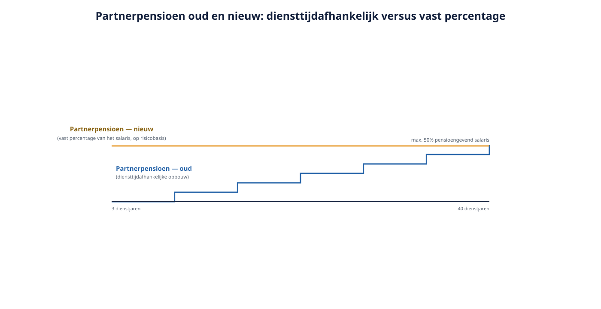

Deel 8 — De risicodekkingen
Niveau 1 · Fundament · Deelnemersreader
8.1 Leerdoelen
Na dit deel kun je:
- het nieuwe kader voor het partnerpensioen beschrijven: risicobasis, percentage van het salaris, diensttijdonafhankelijk;
- het onderscheid maken tussen partnerpensioen vóór en ná de pensioendatum;
- het wezenpensioen en het Anw-hiaatpensioen plaatsen;
- uitleggen wat er gebeurt met de dekking bij uitdiensttreding: uitloopdekking, WW-periode en vrijwillige voortzetting;
- het arbeidsongeschiktheidspensioen en de premievrijstelling bij arbeidsongeschiktheid beschrijven;
- voor een concreet gezin beoordelen of de overgang naar het nieuwe kader gunstig of ongunstig uitpakt, en dat uitleggen.
8.2 Waarom dit deel er nu staat
In de delen 5, 6 en 7 kwam steeds dezelfde zin terug: het nabestaandenpensioen moet hoe dan ook om. Ook wie de staffel behoudt, ook wie al een vlakke premie had, ook wie denkt dat hij klaar is.
Er is nog een reden waarom dit deel belangrijker is dan de aandacht die het meestal krijgt. Het ouderdomspensioen verandert in vorm; het nabestaandenpensioen verandert in uitkomst. Voor sommige gezinnen wordt de dekking fors hoger, voor andere fors lager, en dat verschil openbaart zich op het slechtst denkbare moment. Wie hierover onzorgvuldig communiceert, doet schade die niet meer te herstellen is.
8.3 Het oude beeld
Onder het oude stelsel kende het partnerpensioen bij overlijden vóór de pensioendatum twee hoofdvarianten:
Op opbouwbasis. De nabestaande kreeg een percentage — vaak 70% — van het te bereiken ouderdomspensioen. De hoogte hing dus af van de diensttijd: hoe langer iemand in dienst was, hoe hoger de dekking. Bij uitdiensttreding bleef een premievrije aanspraak staan.
Op risicobasis. Een verzekering die alleen gold zolang de deelname duurde. Eindigde de deelname, dan verviel de dekking — er bleef niets staan.
Het probleem met beide: de hoogte was onvoorspelbaar en hing af van factoren die niets met de behoefte van het gezin te maken hadden. Een 34-jarige met twee kinderen en drie dienstjaren had een lage dekking; een 60-jarige zonder thuiswonende kinderen en veertig dienstjaren een hoge. En bij baanwissels ontstonden gaten die pas na een overlijden zichtbaar werden.
8.4 Het nieuwe kader

Partnerpensioen bij overlijden vóór de pensioendatum:
- op risicobasis — het is een verzekering, geen opbouw;
- een percentage van het pensioengevend salaris, met een wettelijk maximum van 50%;
- onafhankelijk van de diensttijd — een medewerker met drie dienstjaren heeft dezelfde dekking als een collega met dertig.
Wezenpensioen:
- eveneens een percentage van het salaris, met een wettelijk maximum van 20% per kind, en het dubbele voor volle wezen;
- een uniforme eindleeftijd van 25 jaar, zonder de vroegere afhankelijkheid van studie of inwonendheid.
Partnerpensioen bij overlijden ná de pensioendatum werkt anders: dat wordt gefinancierd uit het pensioenvermogen en is dus wél afhankelijk van wat er is opgebouwd. Op de pensioendatum kiest de deelnemer of en in welke mate hij zijn kapitaal gebruikt voor een nabestaandenvoorziening. Dat maakt dit een keuzemoment met grote gevolgen — en daarmee een onderwerp van keuzebegeleiding (deel 17).
Het onderscheid vóór/ná de pensioendatum is essentieel en wordt in gesprekken voortdurend door elkaar gehaald.
8.5 Wie wint en wie verliest
De omslag naar een diensttijdonafhankelijk percentage van het salaris herverdeelt.
Beter af: jonge deelnemers, mensen met korte dienstverbanden, mensen die vaak van baan wisselen, deeltijders in een sector met hoge instroom. Een 30-jarige met twee dienstjaren gaat van een marginale dekking naar het volle percentage.
Slechter af: deelnemers met lange dienstverbanden en een hoog te bereiken ouderdomspensioen, vooral in regelingen die 70% van het te bereiken pensioen dekten. Voor een 58-jarige met 31 dienstjaren kan de nieuwe dekking lager uitvallen dan de oude.
Karel Sanders valt in de tweede groep. Dat is een gesprek dat Anouk Verhagen bij Van Doorn Techniek moet voeren, en het is een moeilijker gesprek dan het premiegesprek — want dit gaat niet over zijn eigen pensioen maar over de positie van zijn partner als hij morgen overlijdt.
De juiste aanpak is niet geruststellen maar rekenen: wat was de oude dekking in euro’s, wat wordt de nieuwe, en welk gat blijft er over? Als er een gat is, zijn er oplossingen — vrijwillige aanvullende dekking, of een individuele overlijdensrisicoverzekering — maar die kosten geld en dat gesprek hoort vóór de overgang plaats te vinden, niet erna.
8.6 Het gat bij uitdiensttreding
Dit is historisch de grootste zwakke plek in de Nederlandse nabestaandendekking, en het nieuwe kader adresseert hem expliciet.
Omdat het partnerpensioen op risicobasis is verzekerd, vervalt de dekking in beginsel bij einde deelname. Iemand die van baan wisselt en tussentijds komt te overlijden, of die werkloos wordt, laat zijn gezin zonder dekking achter. Daarom gelden aanvullende regels:
- Uitloopdekking. De risicodekking loopt na einde van de deelname nog een periode door — standaard drie maanden.
- Dekking tijdens de WW-periode. Zolang iemand een WW-uitkering ontvangt, blijft de dekking in stand.
- Vrijwillige voortzetting. De deelnemer kan de dekking na afloop daarvan zelf voortzetten, gefinancierd uit zijn eigen opgebouwde pensioenvermogen. Dat is een reële keuze met een reële prijs: het gaat af van het ouderdomspensioen.
Deze regels zijn goed nieuws, maar zij werken alleen als de deelnemer ervan weet. Een uitloopdekking waarvan niemand op de hoogte is, is een technische voorziening zonder praktische waarde. Dit is bij uitstek een onderwerp waarop een uitvoerder wordt beoordeeld op de kwaliteit van zijn communicatie op het uitdiensttredingsmoment (deel 17 en 19).
8.7 Het Anw-hiaat
De Algemene nabestaandenwet biedt alleen in beperkte gevallen een uitkering aan een nabestaande, met inkomenstoets en met voorwaarden rond kinderen en arbeidsongeschiktheid. Voor veel gezinnen is er dus géén uitkering vanuit de eerste pijler — het zogeheten Anw-hiaat.
Werkgevers kunnen daarvoor een aanvullende dekking aanbieden: het Anw-hiaatpensioen, een tijdelijke uitkering aan de partner tot diens AOW-leeftijd. Vaak is dit een vrijwillige, door de werknemer te betalen dekking.
Twee aandachtspunten voor de praktijk:
- Vrijwillige dekkingen kennen doorgaans een aanmeldtermijn, soms met acceptatievoorwaarden na afloop daarvan. Wie zich niet tijdig aanmeldt, kan er later niet zomaar in.
- Bij een transitie is dit een natuurlijk moment om de dekking opnieuw onder de aandacht te brengen — en om te controleren of de vrijwillige regeling zelf ook moet worden aangepast.
8.8 Arbeidsongeschiktheid
Twee verschillende voorzieningen die in de praktijk door elkaar worden gehaald:
Premievrijstelling bij arbeidsongeschiktheid. De pensioenopbouw loopt geheel of gedeeltelijk door zonder dat er premie wordt betaald, naar rato van het arbeidsongeschiktheidspercentage. Dit is een dekking binnen de pensioenregeling en zit doorgaans standaard in het contract. Het is de belangrijkste en meest onderschatte dekking van de hele regeling: zonder premievrijstelling stopt de opbouw op het moment dat iemand het minst in staat is haar zelf voort te zetten.
Arbeidsongeschiktheidspensioen. Een aanvulling op de WIA-uitkering, meestal een percentage van het salaris boven of onder een bepaalde grens. Dit is een inkomensdekking, geen pensioenopbouw.
Bij een transitie moeten beide worden bekeken:
- Hoe verhoudt de premievrijstelling zich tot de nieuwe premiesystematiek? Bij een vlakke premie is de voortgezette opbouw eenvoudiger te bepalen dan bij een staffel, waar de vraag opkomt in welke leeftijdsklasse de arbeidsongeschikte deelnemer meeloopt.
- Wat gebeurt er met iemand die tijdens de transitie ziek wordt of al ziek is? Dat is een bekende vraag in de praktijk, waarover de toezichthouders en de sector nadere uitleg hebben gegeven. Het uitgangspunt: de positie van de zieke deelnemer moet uitdrukkelijk in het transitietraject worden geadresseerd, niet impliciet meegenomen.
Controleer bij elk dossier expliciet welke regeling geldt voor de groep die op het transitiemoment arbeidsongeschikt is. Dit is een groep die zichzelf niet meldt en die door de werkgever gemakkelijk over het hoofd wordt gezien.
8.9 Het gesprek met Karel
Anouk Verhagen moet met Karel Sanders praten. Zijn situatie: 58 jaar, 31 dienstjaren, partner van 56, geen thuiswonende kinderen meer. Oude regeling: partnerpensioen op opbouwbasis, 70% van het te bereiken ouderdomspensioen. Nieuwe regeling: 40% van het salaris op risicobasis.
Wat zij moet doen:
- De twee bedragen náást elkaar zetten, in euro’s per jaar. Niet in percentages — die zeggen een monteur niets en verhullen het verschil.
- Het gat benoemen als er een gat is, zonder omhaal.
- De opties noemen: vrijwillige aanvullende dekking binnen de regeling, of een individuele verzekering, met de prijs erbij.
- Het onderscheid vóór/ná pensioendatum uitleggen, want Karel is over negen jaar met pensioen en dan verandert het regime opnieuw.
- Een schriftelijke bevestiging sturen. Dit is een gesprek dat over tien jaar relevant kan worden, op een moment waarop Karel er niet meer is om te bevestigen wat er is gezegd.
Wat zij niet moet doen: zeggen dat “het gemiddeld genomen beter wordt”. Dat is voor de populatie misschien waar en voor Karels partner irrelevant.
8.10 Kernbegrippen
| Begrip | Betekenis |
|---|---|
| Risicobasis | Verzekering die geldt zolang de deelname duurt; geen opbouw |
| Opbouwbasis | Aanspraak die met de diensttijd groeit en premievrij blijft staan |
| Diensttijdonafhankelijk | Hoogte los van het aantal dienstjaren |
| Uitloopdekking | Doorlopen van de risicodekking na einde deelname |
| Vrijwillige voortzetting | Zelf voortzetten van de dekking, uit eigen pensioenvermogen |
| Anw-hiaat | Ontbreken van een uitkering vanuit de Algemene nabestaandenwet |
| Premievrijstelling bij arbeidsongeschiktheid | Voortzetting van de opbouw zonder premiebetaling |
| Arbeidsongeschiktheidspensioen | Aanvulling op de WIA-uitkering |
8.11 Samenvatting
- Het partnerpensioen vóór de pensioendatum is onder de Wtp een risicodekking: een percentage van het salaris, diensttijdonafhankelijk, met een wettelijk maximum van 50%.
- Het wezenpensioen kent een maximum per kind, het dubbele voor volle wezen, en een uniforme eindleeftijd van 25 jaar.
- Na de pensioendatum wordt het partnerpensioen uit het pensioenvermogen gefinancierd; dat is een keuzemoment.
- De omslag herverdeelt: jonge deelnemers en korte dienstverbanden gaan erop vooruit, lange dienstverbanden met een hoog te bereiken pensioen kunnen erop achteruitgaan.
- Het gat bij uitdiensttreding wordt geadresseerd met uitloopdekking, dekking tijdens WW en vrijwillige voortzetting — maar alleen als de deelnemer ervan weet.
- Premievrijstelling bij arbeidsongeschiktheid is de meest onderschatte dekking; de positie van wie op het transitiemoment ziek is, moet expliciet worden geregeld.
Doorkijk naar deel 9. We volgen nu de deelnemer door zijn hele reis: indiensttreding, waardeoverdracht, scheiding, keuzes rond de pensioendatum en overlijden. Alles wat je in de delen 1 tot en met 8 hebt geleerd, komt daar samen op het niveau van één mens met één dossier.